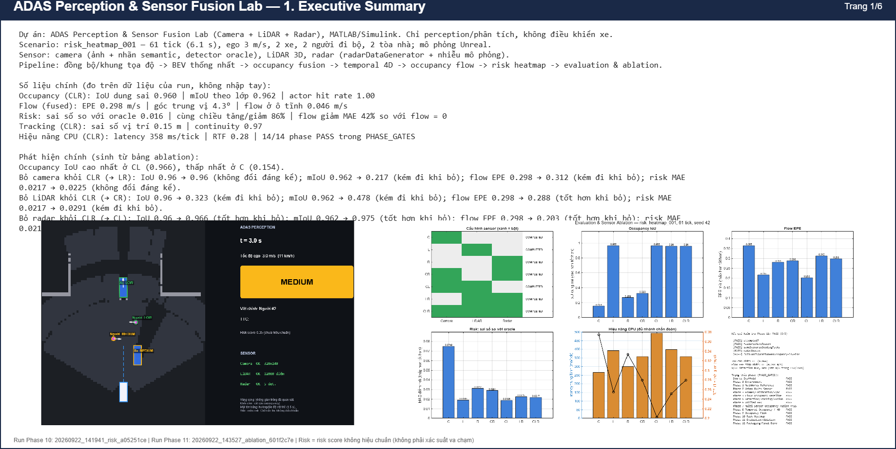
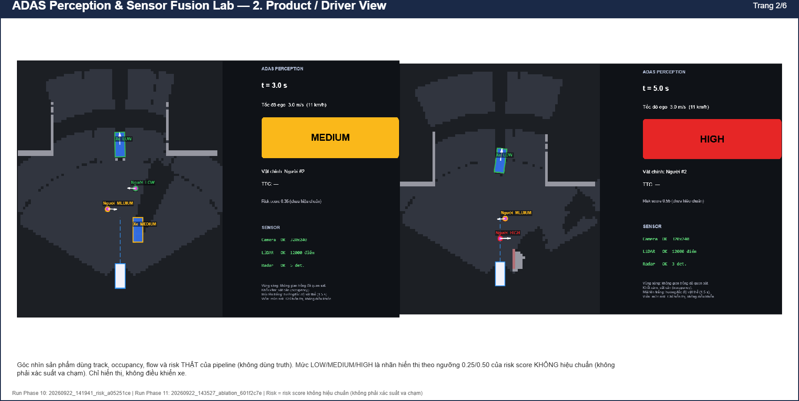
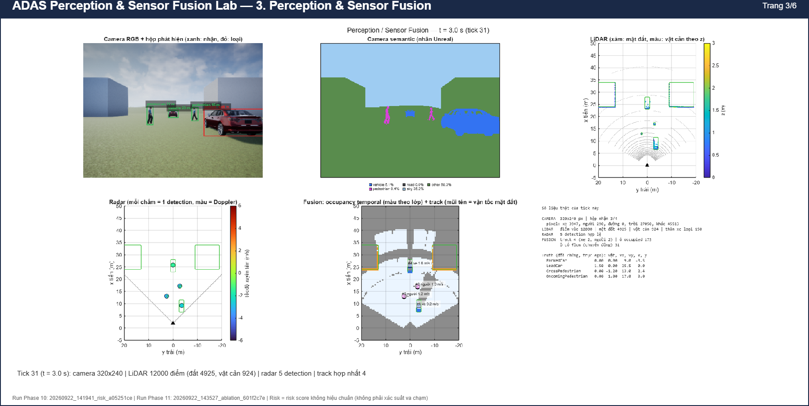
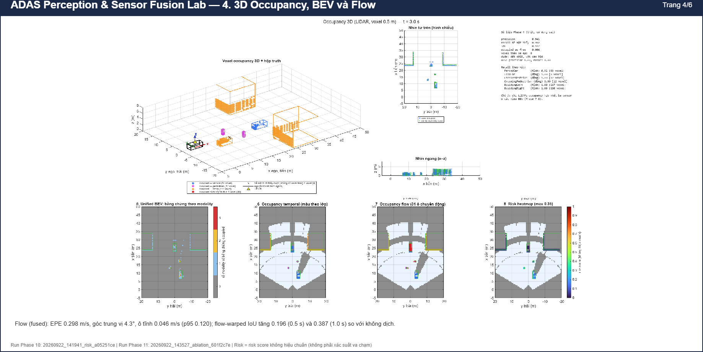
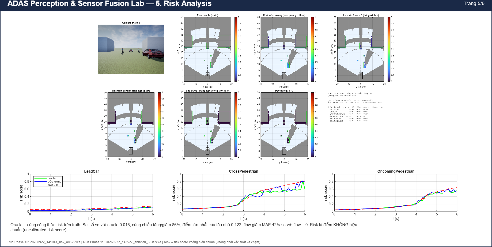
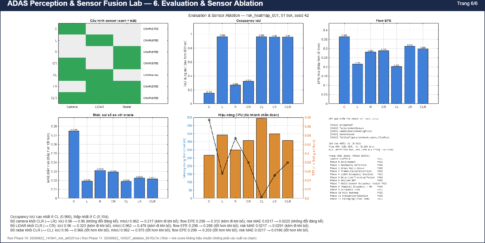

ADAS Perception & Sensor Fusion Lab — báo cáo cuối
Sinh tự động từ kết quả đã lưu; risk là điểm không hiệu chuẩn (không phải xác suất va chạm).
Số liệu chính
- Occupancy (CLR): IoU dung sai 0.960 | mIoU theo lớp 0.962 | actor hit rate 1.00
- Flow (fused): EPE 0.298 m/s | góc trung vị 4.3° | flow ở ô tĩnh 0.046 m/s
- Risk: sai số so với oracle 0.016 | cùng chiều tăng/giảm 86% | flow giảm MAE 42% so với flow = 0
- Tracking (CLR): sai số vị trí 0.15 m | continuity 0.97
- Hiệu năng CPU (CLR): latency 358 ms/tick | RTF 0.28 | 14/14 phase PASS trong PHASE_GATES
Phát hiện từ bảng ablation
- Occupancy IoU cao nhất ở CL (0.966), thấp nhất ở C (0.154).
- Bỏ camera khỏi CLR (→ LR): IoU 0.96 → 0.96 (không đổi đáng kể); mIoU 0.962 → 0.217 (kém đi khi bỏ); flow EPE 0.298 → 0.312 (kém đi khi bỏ); risk MAE 0.0217 → 0.0225 (không đổi đáng kể).
- Bỏ LiDAR khỏi CLR (→ CR): IoU 0.96 → 0.323 (kém đi khi bỏ); mIoU 0.962 → 0.478 (kém đi khi bỏ); flow EPE 0.298 → 0.288 (tốt hơn khi bỏ); risk MAE 0.0217 → 0.0291 (kém đi khi bỏ).
- Bỏ radar khỏi CLR (→ CL): IoU 0.96 → 0.966 (tốt hơn khi bỏ); mIoU 0.962 → 0.975 (tốt hơn khi bỏ); flow EPE 0.298 → 0.203 (tốt hơn khi bỏ); risk MAE 0.0217 → 0.0186 (tốt hơn khi bỏ).
1. Executive Summary

2. Product / Driver View

3. Perception & Sensor Fusion

4. 3D Occupancy, BEV và Flow

5. Risk Analysis

6. Evaluation & Sensor Ablation
